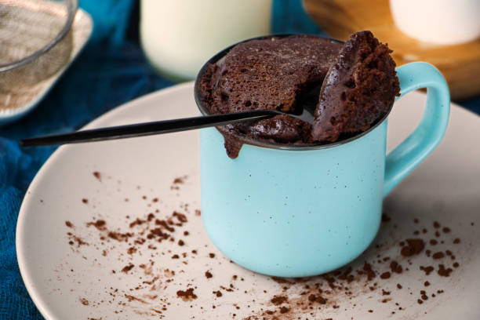

Chocolate Mug Cake

Description
This quick and easy chocolate mug cake is the perfect dessert when you’re craving
something sweet but don’t want the hassle of baking. Made with pantry staples and
ready in just minutes, it’s a moist and rich chocolate treat you can enjoy in no
time. Customize it with your favorite toppings like whipped cream, ice cream, or
even a drizzle of chocolate syrup.
Serves: 1
Ingredients
- 1/4 cup all-purpose flour
- 2 tbsp cocoa powder
- 2 tbsp sugar
- 1/4 tsp baking powder
- Pinch of salt
- 1/4 cup milk
- 2 tbsp vegetable oil
- 1/4 tsp vanilla extract
- 2 tbsp chocolate chips (optional)
Instructions
Mix dry ingredients:
-
In a microwave-safe mug, whisk together flour, cocoa powder, sugar, baking powder,
and a pinch of salt.
Add wet ingredients:
-
Stir in the milk, oil, and vanilla extract until a smooth batter forms. If you like,
fold in some chocolate chips for extra richness.
Microwave:
-
Microwave the mug on high for about 1 minute to 1 minute 15 seconds. The cake should
rise and be set in the center.
Serve:
-
Let the cake cool for a minute or two before enjoying. You can top it with a scoop of
ice cream or whipped cream if desired.